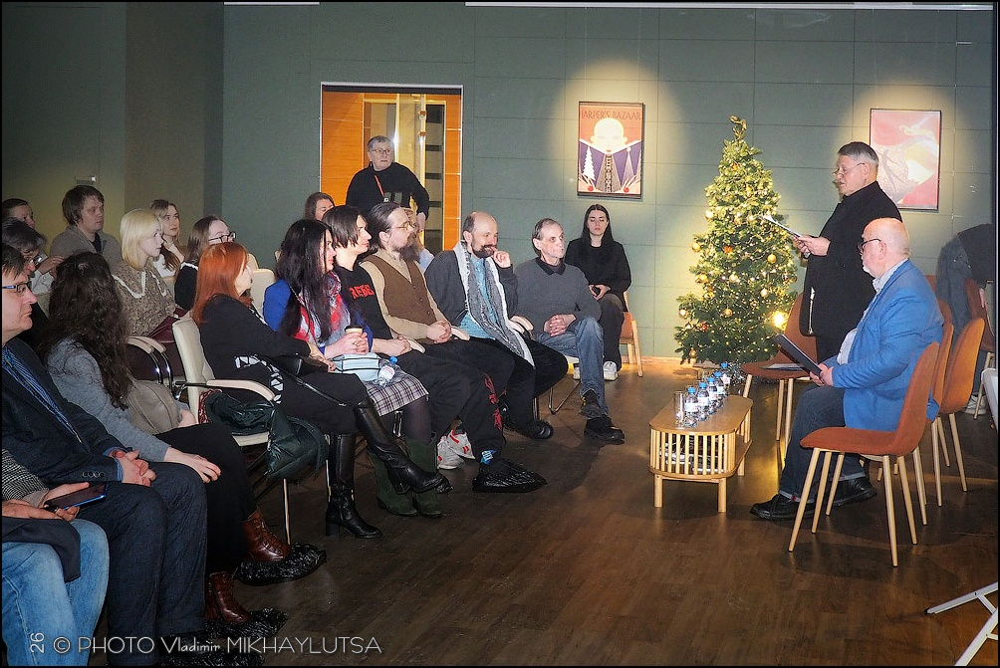
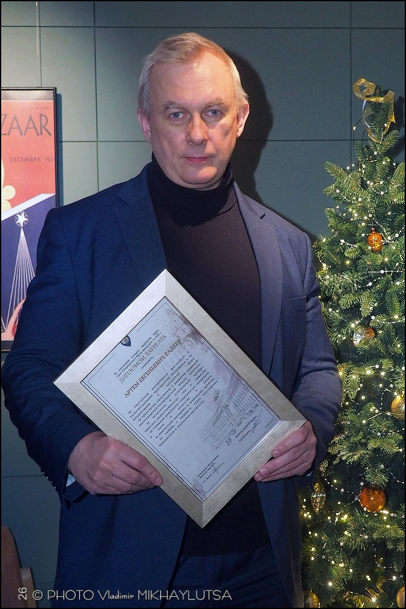
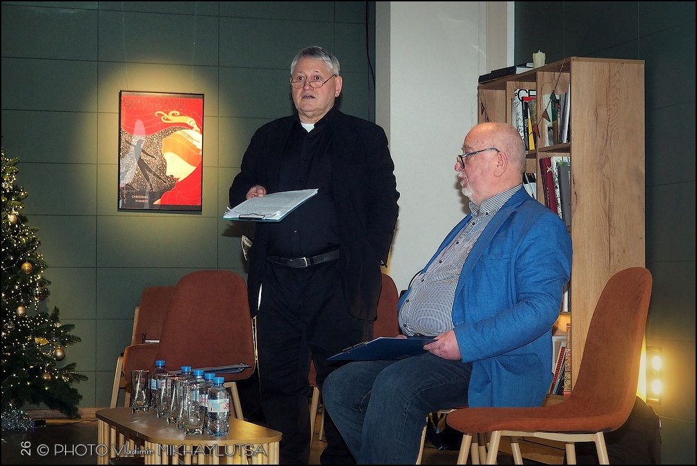
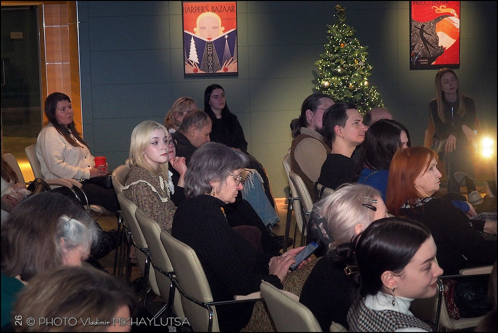
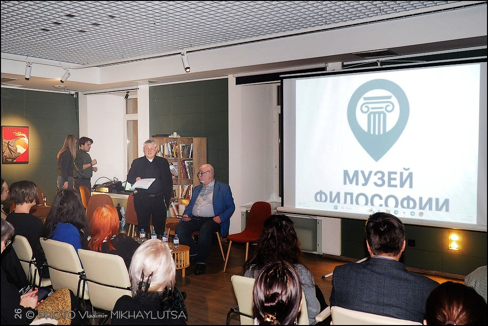

САНКТ-ПЕТЕРБУРГ — 12 января в культурно-образовательном пространстве Doctrina et Nobiles (Шведский пер., 2) состоялась первая торжественная церемония вручения премии «Философ года — 2025», учреждённой Санкт-Петербургским Музеем философии.
Событие было направлено на то, чтобы закрепить статус Петербурга как интеллектуальной столицы и вывести академическую мысль в пространство публичного диалога. Премия «Философ года» стала новой городской традицией, отмечающей вклад мыслителей в формирование современного социокультурного ландшафта.
🏅 Финалисты премии «Философ года — 2025»
В 2025 году конкурс объединил десятки претендентов. Жюри под председательством профессора Сергея Леонидовича Фокина выбрало пять финалистов, чьи проекты стали наиболее резонансными:
1. Виктор Мазин
Психоаналитик, кандидат философских наук
Основатель Музея сновидений Зигмунда Фрейда, главный редактор журнала «Кабинет». В 2025 году он провёл во Французском институте цикл лекций о постмодернизме Жана-Франсуа Лиотара.
2. Алла Митрофанова
Философ, куратор, преподаватель
Работает на стыке философии, искусства и образования. Преподаёт в Институте современного искусства Бакштейна, участвует в образовательных программах музея «Гараж» и ГЭС-2. Инициировала и ведёт открытый семинар «Философское кафе» в Музее звука.
3. Александр Погребняк
Философ, преподаватель
Автор публичного курса «Архитекторы смысла», преподаватель школы Masters. В 2025 году опубликовал серию статей в ведущих научных журналах («Логос», «Вопросы философии», «НЛО»), а также подготовил предисловия к книгам Вальтера Беньямина и Джорджо Агамбена для издательства Ad Marginem.
4. Артём Радеев
Философ, организатор
Его деятельность стала настоящей «картой» философских событий Петербурга. В 2025 году он провёл циклы лекций в клубе Doctrina et Nobiles («Эстетика чая», «Образы в кино», «Эстетика кошек»), выступал в СПбГУ и РГПУ им. Герцена, участвовал в дискуссионных форматах и организовал ряд научных мероприятий.
5. Александр Секацкий
Философ, медийный спикер
Вёл лекционные программы из цикла «Поэтические аспекты мироздания», читал курс о философии современного искусства, регулярно выступал на федеральных и петербургских телеканалах.

🏆 Лауреат премии
Имя лауреата было объявлено непосредственно на церемонии. По итогам конкурса лауреатом премии «Философ года — 2025» стал:
Артём Евгеньевич Радеев
Лауреат был награждён дипломом «за неустанную валоризацию философии в интеллектуальном пространстве Петербурга и её актуализацию в публичной сфере; за креативное сохранение и развитие традиций ленинградской/петербургской школы эстетики; за включение в эстетический дискурс практико-ориентированных тем и сюжетов; за глубокую рефлексию современных тенденций в кино и искусстве в целом; за вовлечение молодёжи в творческие проекты; за любовь к мудрости через постижение прекрасного в локальных контекстах».

Диплом лауреата подписали:
- Председатель Жюри премии «Философ года — 2025» — С. Л. Фокин
- Директор Санкт-Петербургского Музея философии — А. В. Дмитриев

📋 Программа вечера
Церемония включила не только награждение, но и публичную интеллектуальную программу. В рамках вечера прошли:
- объявление лауреата и торжественное вручение премии;
- первая лекция победителя на тему «Зачем Петербургу публичный философ?»;
- премьера документального фильма «Маршрут Мераба Мамардашвили»;
- фуршет и неформальное общение в кругу интеллектуалов, экспертов и деятелей культуры.


Санкт-Петербургский Музей философии благодарит участников, финалистов и партнёров премии за поддержку конкурса и приглашает следить за дальнейшими проектами музея.